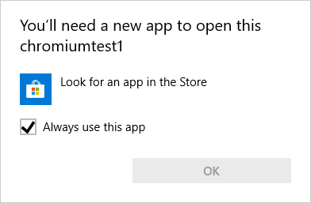

Test Case for Chromium bug 837185
- Trigger Protocol and notice that Chrome does nothing at all
-
Register an external protocol, eg chromiumtest10:// and point it at notepad.exe
- Trigger Protocol again (identical to step 1)
- Check "Open these types of links in the associated app"
- Click "Launch" and notice that Notepad opens
-
Unregister the protocol
-
Download and run pre-prepared unregister.reg file,
-
or delete the registry keys you manually created following the Microsoft guide
-
Trigger Protocol again (identical to step 1)
-
Notice that a Windows "You'll need a new app to open this" dialog appears, which is inconsistent with the results of step 1:
